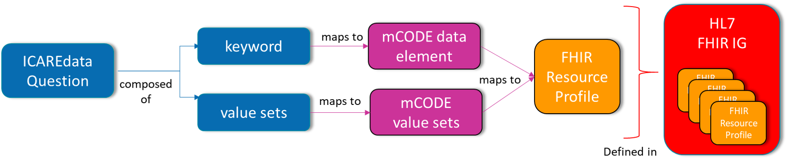

CodeX Implementation Guide: ICAREdata
1.0.0 - CI Build
CodeX Implementation Guide: ICAREdata - Local Development build (v1.0.0). See the Directory of published versions
The overall goal of the ICAREdata project is to support the prospective collection of high quality real-world data, based on mCODE™, to enable clinical oncology research.
The Integrating Clinical trials And Real-world Endpoints data (ICAREdata) project is a collaboration between The MITRE Corporation, the Alliance for Clinical Trials in Oncology, and the National Cancer Institute (NCI). The project is conducting a study to demonstrate the ability to use high-quality mCODE-based real-world data in a clinical trial setting.
This implementation guide intends to cover content necessary for ICAREdata that is not part of the mCODE v1.0 R4 specification. Implementers should refer directly to mCODE for the specification of all mCODE elements.
The mCODE implementation guide includes information on how to interpret conformance requirements as well as elements marked as “must support”. This implementation guide follows those same guidelines.
The ICAREdata strategy is to collect improved real-world data in a way that does not disrupt existing clinical processes and minimizes burden to the provider while enabling the collection of complete, accurate, and computable data. ICAREdata questions are answered by clinicians with the results appearing as structured phrases in the clinical note.
ICAREdata structured phrase questions and value sets are intended to be mapped to FHIR resources compliant with the requirements specified in the mCODE and ICAREdata implementation guides. This includes mapping 1) the ICAREdata question to the appropriate FHIR resource and element, and 2) the associated value to the appropriate vocabulary defined in the specification.
The figure below illustrates how ICAREdata structured phrases relate to FHIR profiles and implementation guides.

For details on mapping guidance for specific ICAREdata structured phrases, please consult ICAREdata to FHIR mapping guidance.
For inquiries regarding ICAREdata Project, contact ICAREdata Team.
For questions or issues related to this implementation guide, please use our ICAREdata GitHub issue tracker.
For questions or issues regarding the content of mCODE implementation guide, please use the mCODE GitHub issue tracker.